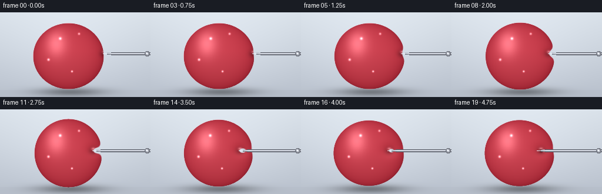
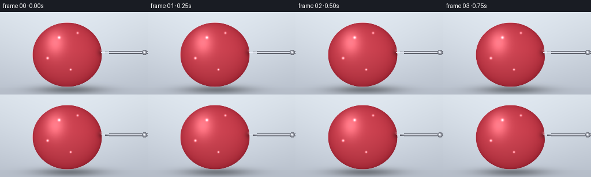
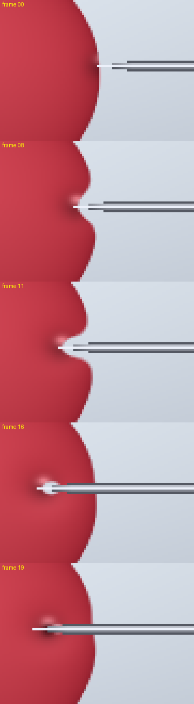

CODING AGENTS AS PIXEL WORLD MODELS
traex/Seed-2.1-Pro-0915 · phygen_024
点击播放 · 原生 RGB 像素
逐轮保存的候选
回放视频、检查图与代码变化。
每份候选均可单独播放。实际图片检查记录在下方工具轨迹中。
候选 01播放与检查图
点击播放 · 原生 RGB 像素


展开代码变化
--- 上一保存版本
+++ 本次保存版本
@@ -0,0 +1,178 @@
+"""Text-to-video: a pin slowly presses into a water-filled balloon.
+
+Pure numpy/PIL rendering. The balloon membrane is an implicit surface
+(ellipse plus a Gaussian dent that tracks the pin tip), which gives smooth
+normals for lighting while keeping the tip exactly in contact with the
+stretched membrane.
+"""
+import math
+from pathlib import Path
+
+import numpy as np
+
+import artifact_io
+
+W, H = 256, 144
+N_FRAMES, FPS = 20, 4.0
+CASE_DIR = Path(__file__).parent
+
+# --- Scene layout ---------------------------------------------------------
+CX, CY = 116.0, 74.0 # balloon centre
+RX, RY = 60.0, 56.0 # balloon radii
+PY = CY - 4.0 # pin axis height
+GROUND_Y = 132.0
+X_CONTACT = CX + RX * math.sqrt(max(0.0, 1.0 - ((PY - CY) / RY) ** 2))
+MAX_PEN = 30.0 # pixels of inward travel by the last frame
+
+# Lighting (upper-left key light, camera looks along +z).
+LIGHT = np.array([-0.45, -0.60, 0.78])
+LIGHT = LIGHT / np.linalg.norm(LIGHT)
+VIEW = np.array([0.0, 0.0, 1.0])
+HALF = LIGHT + VIEW
+HALF = HALF / np.linalg.norm(HALF)
+
+
+def smoothstep(t):
+ return t * t * (3.0 - 2.0 * t)
+
+
+def render_frame(index):
+ t = index / (N_FRAMES - 1)
+ pen = MAX_PEN * smoothstep(t)
+
+ # Gentle fluid wobble as the pin works into the balloon.
+ wobble = 1.0 + 0.035 * math.sin(2.0 * math.pi * 1.4 * t) * (pen / MAX_PEN)
+ rx = RX * (1.0 - 0.03 * pen / MAX_PEN) * wobble
+ ry = RY * (1.0 + 0.025 * pen / MAX_PEN) / wobble
+ cx = CX + 1.2 * math.sin(2.0 * math.pi * 0.9 * t) * (pen / MAX_PEN)
+
+ tx = X_CONTACT - pen # needle tip x
+ depth = pen / MAX_PEN
+ puncture = smoothstep(max(0.0, (t - 0.78) / 0.22)) # last frames: tip parts membrane
+
+ # Dimple apex sits at the tip; once piercing starts the membrane lags
+ # slightly behind the tip so the needle sits inside the balloon.
+ apex_x = tx + 1.0 + 5.0 * puncture
+ sx = 10.0 + 4.0 * depth # dimple grows a little wider
+ sy = 8.5 + 2.5 * depth
+
+ ys, xs = np.mgrid[0:H, 0:W].astype(np.float32)
+ u = (xs - cx) / rx
+ v = (ys - CY) / ry
+ f0 = u * u + v * v - 1.0
+
+ # Gaussian dent whose centre lies exactly on the desired membrane apex,
+ # so amplitude is solved from f0 at the apex (sub-critical, smooth dimple).
+ u_a = (apex_x - cx) / rx
+ v_a = (PY - CY) / ry
+ amp = max(0.004, 1.0 - u_a * u_a - v_a * v_a)
+ amp *= 1.0 + 0.05 * math.sin(2.0 * math.pi * 1.7 * t) * depth
+ gx_d = (xs - apex_x) / sx
+ gy_d = (ys - PY) / sy
+ g2 = gx_d * gx_d + gy_d * gy_d
+ dent = amp * np.exp(-g2)
+ f = f0 + dent
+
+ # --- Background: studio gradient, glow, ground, contact shadow --------
+ bg = np.empty((H, W, 3), np.float32)
+ gy = ys / (H - 1)
+ top = np.array([216, 224, 232.0])
+ bot = np.array([182, 190, 202.0])
+ bg[:] = top[None, None, :] * (1.0 - gy[..., None]) + bot[None, None, :] * gy[..., None]
+ glow = np.exp(-(((xs - CX) / 120.0) ** 2 + ((ys - 66.0) / 90.0) ** 2))
+ bg += 14.0 * glow[..., None]
+ ground = ys >= GROUND_Y
+ bg[ground] = bg[ground] * 0.86 + np.array([168.0, 174.0, 184.0]) * 0.14
+ shadow = np.exp(-(((xs - (cx + 4.0)) / 58.0) ** 2 + ((ys - (GROUND_Y + 3.0)) / 7.5) ** 2))
+ bg *= (1.0 - 0.38 * shadow)[..., None]
+
+ # --- Balloon normals and shading --------------------------------------
+ edge = 0.035
+ coverage = np.clip(0.5 - f / edge, 0.0, 1.0)
+ inside = f < 0.0
+
+ r2 = np.clip(u * u + v * v, 0.0, 1.0)
+ z = np.sqrt(np.clip(1.0 - r2, 0.0, 1.0))
+ # Analytic gradient of f.
+ d_dent_x = dent * (-2.0 * gx_d / sx)
+ d_dent_y = dent * (-2.0 * gy_d / sy)
+ gnx = 2.0 * u / rx + d_dent_x
+ gny = 2.0 * v / ry + d_dent_y
+ gnz = 1.6 * z + 1e-3
+ norm = np.sqrt(gnx * gnx + gny * gny + gnz * gnz)
+ nx, ny, nz = gnx / norm, gny / norm, gnz / norm
+ n_dot_l = np.clip(nx * LIGHT[0] + ny * LIGHT[1] + nz * LIGHT[2], 0.0, 1.0)
+ n_dot_h = np.clip(nx * HALF[0] + ny * HALF[1] + nz * HALF[2], 0.0, 1.0)
+
+ base = np.array([204.0, 48.0, 64.0])
+ deep = np.array([108.0, 18.0, 34.0])
+ shade = 0.32 + 0.78 * n_dot_l
+ color = base[None, None, :] * shade[..., None]
+ # Depth darkening toward the silhouette, cooler water tint low down.
+ edge_dark = (1.0 - z) ** 2
+ color = color * (1.0 - 0.45 * edge_dark[..., None]) + deep[None, None, :] * (0.45 * edge_dark[..., None])
+ water = np.clip((v + 0.15) / 1.15, 0.0, 1.0) * z
+ color *= (1.0 - 0.10 * water[..., None])
+ # Fresnel rim light.
+ fres = np.clip(1.0 - nz, 0.0, 1.0) ** 2
+ rim = np.array([255.0, 168.0, 174.0])
+ color += (0.55 * fres)[..., None] * rim[None, None, :]
+ # Broad soft studio reflection + tight specular.
+ soft = np.exp(-(((xs - (cx - 22.0)) / 17.0) ** 2 + ((ys - (CY - 24.0)) / 23.0) ** 2)) * z
+ color += (70.0 * soft)[..., None]
+ spec = (n_dot_h ** 30) * z
+ color += (235.0 * spec)[..., None]
+ # A few surface droplets for the water-filled look.
+ for dx, dy, r in ((-14, -30, 2.2), (18, -38, 1.7), (-34, 6, 1.9), (6, 26, 1.5)):
+ dot = np.exp(-(((xs - (cx + dx)) / r) ** 2 + ((ys - (CY + dy)) / r) ** 2))
+ color += (200.0 * dot * z)[..., None]
+
+ # Contact shadow/stretch ring where the membrane wraps the needle.
+ ring = np.exp(-(((xs - apex_x) / 7.0) ** 2 + ((ys - PY) / 6.0) ** 2)) * inside
+ color *= (1.0 - 0.30 * ring)[..., None]
+ crescent = np.exp(-(((xs - apex_x) / 3.2) ** 2 + ((ys - (PY - 3.2)) / 2.4) ** 2)) * inside
+ color += (90.0 * crescent)[..., None]
+ # Puncture mark once the tip has crossed the membrane.
+ if puncture > 0.0:
+ hole = np.exp(-(((xs - apex_x) / 2.6) ** 2 + ((ys - PY) / 2.6) ** 2)) * inside
+ color = color * (1.0 - 0.85 * puncture * hole[..., None]) + np.array([46.0, 8.0, 14.0]) * (0.85 * puncture * hole[..., None])
+
+ color = np.clip(color, 0.0, 255.0)
+ frame = bg * (1.0 - coverage[..., None]) + color * coverage[..., None]
+
+ # --- Metallic pin, drawn over everything ------------------------------
+ shaft_x0 = tx - 1.0
+ taper = 16.0
+ along = xs - shaft_x0
+ half_w = np.where(along < taper, 2.3 * np.clip(along / taper, 0.0, 1.0), 2.3)
+ half_w = np.where(along >= 0.0, half_w, 0.0)
+ lateral = np.abs(ys - PY)
+ shaft = (along >= 0.0) & (lateral <= half_w)
+ lat_n = np.where(half_w > 0.0, lateral / np.maximum(half_w, 1e-3), 1.0)
+ metal = np.empty((H, W, 3), np.float32)
+ metal[:] = np.array([82.0, 86.0, 96.0])
+ core = np.clip(1.0 - lat_n, 0.0, 1.0)
+ metal += (150.0 * core ** 2)[..., None]
+ glint = np.exp(-((ys - (PY - 0.9)) / 0.55) ** 2)
+ metal += (60.0 * glint * shaft)[..., None]
+ frame = np.where(shaft[..., None], metal, frame)
+ # Pin head near the right edge.
+ hx, hr = 250.0, 4.6
+ head = ((xs - hx) / hr) ** 2 + ((ys - PY) / hr) ** 2 <= 1.0
+ hn = np.clip(np.sqrt(((xs - hx) / hr) ** 2 + ((ys - PY) / hr) ** 2), 0.0, 1.0)
+ head_col = np.array([104.0, 108.0, 118.0]) + (150.0 * (1.0 - hn) ** 1.5)[..., None]
+ head_glint = np.exp(-(((xs - (hx - 1.4)) / 1.6) ** 2 + ((ys - (PY - 1.4)) / 1.6) ** 2))
+ head_col += 70.0 * head_glint[..., None]
+ frame = np.where(head[..., None], np.clip(head_col, 0, 255), frame)
+
+ return np.clip(frame, 0.0, 255.0).astype(np.uint8)
+
+
+def main():
+ frames = np.stack([render_frame(i) for i in range(N_FRAMES)], axis=0)
+ artifact_io.save(frames, CASE_DIR)
+ print(f"saved {frames.shape} to {CASE_DIR}")
+
+
+if __name__ == "__main__":
+ main()
可观测工具轨迹
实际执行的命令与返回图片。
命令 1exit 0
/bin/bash -lc 'cat prompt.txt; echo "==== RULES ===="; cat GENERATION_RULES.md; echo "==== SPEC ===="; cat task_spec.json; echo "==== LS ===="; ls -la'
命令 2exit 0
/bin/bash -lc 'cat artifact_io.py'
命令 3exit 0
/bin/bash -lc 'python generate.py && ls -la'
命令 4exit 0
/bin/bash -lc "python - <<'EOF'
from PIL import Image
for i in (0, 8, 11, 16, 19):
im = Image.open(f\"frames/{i:02d}.png\").crop((130, 40, 220, 105)).resize((360, 260), Image.Resampling.NEAREST)
im.save(f\".tmp/crop_{i:02d}.png\")
print(\"ok\")
EOF"命令 5exit 0
/bin/bash -lc "python - <<'EOF'
from PIL import Image, ImageDraw
ids = (0, 8, 11, 16, 19)
ims = [Image.open(f\".tmp/crop_{i:02d}.png\") for i in ids]
sheet = Image.new(\"RGB\", (ims[0].width, ims[0].height*len(ims)), (20,20,20))
d = ImageDraw.Draw(sheet)
for k, (i, im) in enumerate(zip(ids, ims)):
sheet.paste(im, (0, k*im.height))
d.text((4, k*im.height+2), f\"frame {i:02d}\", fill=(255,255,0))
sheet.save(\".tmp/contact_montage.png\")
print(sheet.size)
EOF"视觉工具实际返回图片 1

视觉工具实际返回图片 2

保存候选 1 份；完成命令 5 次；可验证图片返回 2 张。原始 API 响应与完整日志保留在本地。